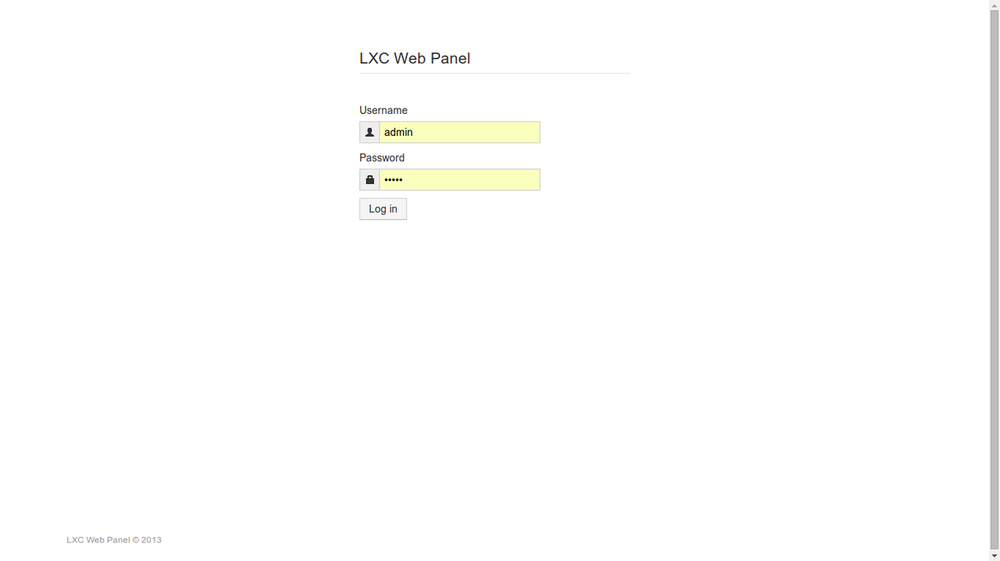
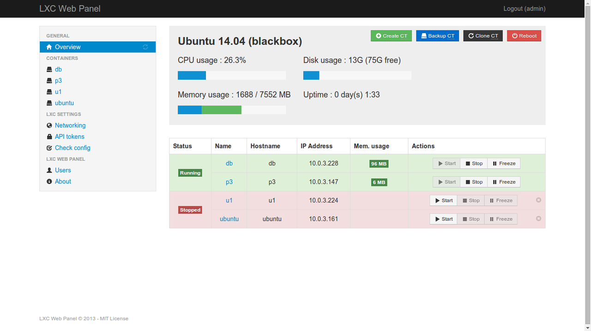

Building environments with Linux Containers
Thanks to virtualization tools is too easy today to quickly build multiple instance environments. VMWare or VirtualBox are good options when the operative system to execute on the virtual machine is distinct from the host system, but when the objective is to virtualize Linux over Linux the option spectrum opens to other cheaper options in the resource consumption.
Linux Containers
If we want to build (or replicate) an ambient consisting only of Linux instances there is a tool named LXC: Linux Containers. It is not a virtual machine but it provides a virtual environment, separating process and net spaces, functionallity provided by the Linux kernel itself since versio 2.6.29 with cgroups integration. Without the full virtual machine simulation overhead there are more available resources to be used.
You can get more information about it in the official LXC page.
Installation
We can install LXC directly from the software repository of our elected distribution:
~$ sudo apt-get install lxc # for Debian-based distros
Also we can install the bleeding edge version directly from the GitHub repository:
~$ sudo apt-get install git # if you don't have installed git yet ~$ git clone git@github.com:lxc/lxc.git ~$ sudo su #$ cd lxc && ./autogen.sh && ./configure && make && sudo make install
Creating instances
The container creation can be done through templates or manually indicating which image to use.
~$ lxc-create -n ubuntu1 -t ubuntu # creates a container named ubuntu1 using the ubuntu template ~$ lxc-create -n ubuntu2 -t ubuntu-cloud -- -r trusty -T http://cloud-images.ubuntu.com/trusty/current/trusty-server-cloudimg-arm64-root.tar.gz
This way, the creation is done without any other intervention from user. There is also a way for interactive creation, visualizing distributions and available architectures:
~$ lxc-create -t download -n ubuntu3
Displaying created instances
To show available instances you can make use of lxc-ls command. It will
only display only the names but using the --fancy flag it will append
more useful information about them:
~$ sudo lxc-ls --fancy NAME STATE IPV4 IPV6 AUTOSTART --------------------------------------------- ubuntu1 RUNNING 10.0.3.228 - NO ubuntu2 RUNNING 10.0.3.147 - NO ubuntu3 STOPPED - - NO
Accessing an instance
Getting access to the instance terminal can be done with the command
lxc-console -n <instance-name>. Executing this command is the same to
gain access to the host's phisical terminal; it is not a remote connection.
To close the terminal connection is enough with the Ctrl-a+q input.
~$ sudo lxc-console -n db # enter Ctrl-a+q to close the session
A web console to rule them all
There is a project called LXC Web Panel (a fork from original project for lxc>=1.0 versions) that is just a web site for Linux containers management. It control tools but also statistic reports for resource consumption visualization for all; guests and host.
Installing Web Panel
To install the web panel we must add the package to our local software repository, install it and change the default configurations if we consider it necesary to do:
~$ wget -O - http://claudyus.github.io/LXC-Web-Panel/claudyus.gpg.key | sudo apt-key add - ~$ echo "deb http://claudyus.github.io/LXC-Web-Panel/ ./" | sudo tee /etc/apt/sources.list.d/lwp.list ~$ sudo apt-get update ~$ sudo apt-get install lwp ~$ sudo cp /etc/lwp/lwp.example.conf /etc/lwp/lwp.conf # using default configuration ~$ sudo service lwp start
I will assume that default settings were used; if change were made do not forget to adapt them to the examples exposed here to you particular cases. Once the installation finishes, open a browser and go to the http://localhost:5000/ web address:

Using admin as default user and password, we can login to the main
panel and it will show us a resource consumption visualization for guests and
hosts; links to instances and networking settings:

Accessing to any instance listed on the left pane we will see information related to it, as execution staus, network properties, assigned processors, memory limits, image location, etc.

Building a custom schema
I recommend to read the Exploring LXC Networking post where it exemplifies in a deeper way each networking setting combination according to the scenario you want to set, as outside and/or between-node conectivity and use of existing interfaces.
Tiempo de crecer

No hace mucho que, cuando trabajaba por las noches en mi casa con la notebook, mi nene traía una pizarra y un teclado viejo que no servía para sentarse a mi lado a darle a las teclas de esa computadora imaginaria y refunfuñar como yo lo hacía. Además de pensar lo afortunado de tener semejante colega haciéndome el aguante a esas horas, se me asomaba la idea de que en algún momento tendría que ponerme manos a la obra en enseñarle Linux de alguna manera. Obviamente no era el momento para abrir las puertas de ese mundo, pero entonces asomó otra pregunta: "¿Y cuándo será el momento preciso?".
El manejo de la interfaz gráfica de la computadora en los chicos parece ser un conocimiento prácticamente natural; más aún en las interfaces nuevas de los teléfonos y tabletas. Seguramente la asimilación del concepto "muevo el puntero con el mouse + click" se aprende mediante observación (es mi humilde opinión; no tengo investigación alguna que me lo confirme ;)), ya que en casa usamos la computadora de manera cotidiana y como mucho fue explicarle qué significan algunos símbolos. Al principio fue pinchar todo lo que se veía en la pantalla pero el concepto ya estaba en su mente. Ahora ya maneja sitios complejos como YouTube sólo siguiendo la interfaz, ya que todavía no sabe leer.
Asumiendo que el aprendizaje de lectura-escritura esté completo de forma que le permita realizar operaciones básicas (leer de la pantalla y escribir palabras con el teclado), sería cuestion de buscar la forma de hacerle interesante el mundo de la informática por afuera de la web... Quizás le interese armar su propia computadora. \o/
El equipo suficiente
Esta idea la tuvo mucho antes que yo alguien mucho más inteligente que yo y creó el proyecto Kano mediante crowdfunding: es básicamente una computadora RaspberryPi con un sistema operativo Linux, un teclado inalámbrico, un parlante y muchos colores. En mi opinión, si uno tiene el dinero y la paciencia de esperar el envío, este es el mejor regalo que se le puede hacer a un chico y más si se pretende que este chico aprenda por sus propios medios y adquiera el interés por las computadoras más allá de la web y los jueguitos. El precio es de USD$ 129... no está mal.
Pero yo no suelo tener paciencia para esperar y menos a que una adquisición internacional y voladora llegue de una buena vez a su destino, así que me puse a buscar otras opciones. Y más ganas tuve de buscarlas cuando entendí que Kano necesita un monitor con entrada HDMI para ser usado :/ por lo que deja de ser portable (¡que sea tan chiquito pero no portable no me gusta!). Una buena opción es comprar una netbook: casi mismo precio, mejores prestaciones y la relación de tamaño entre el teclado y la mano del chico de ~6 años es casi perfecta.
Qué le vamos a instalar
Linux :D
Hay muchas distribuciones para chicos dando vueltas según lo que me dijo Google y a ojo destacan estas tres:
- Huayra: Una distribución basada en Debian de nacionalidad argentina <3.
- Qimo: Una distro basada en Ubuntu, se ve muy llamativa en la interfaz y simplifica el entorno de trabajo. Pareciera un proyecto encarado seriamente pero no veo que tenga mucha actividad últimamente...
- Edubuntu: Otra basada en Ubuntu. Esta distro está orientada a aportar herramientas académicas y ser usado en ambientes escolares.
Edubuntu quizás sea útil para hacer las tareas, pero lo que más quiero ahora es que aprenda a menejarse él solo dentro del entorno. Huayra no parece ofrecerme un entorno más ameno para un niño, por lo que vamos a dejarlo para más adelante también. Qimo parece ser el indicado para mi objetivo, pero sólo por el momento. Cuando arranquemos definitivamente voy a realizar una nueva evaluación de las distribuciones disponibles.
Tiempo de aprender cosas nuevas :D